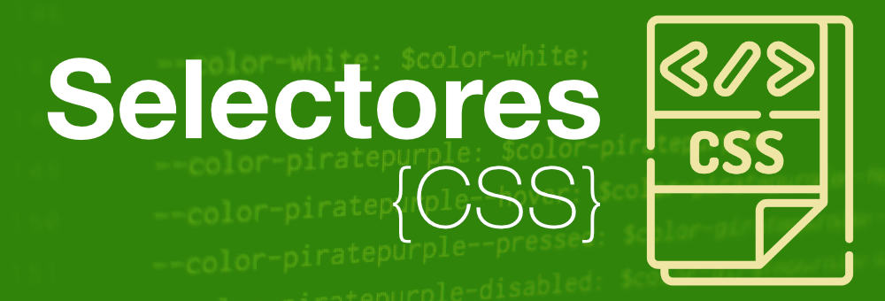

¿Que es un selectro CSS?
Los selectores CSS son herramientas utilizadas para definir el estilo que quieres dar a tus elementos en CSS. Existen muchos tipos de selectores en este lenguaje, cada uno con su propia sintaxis y utilidad. El uso de las reglas de programación correctas ayuda al explorador a aplicar propiedades específicas a los elementos indicados.
